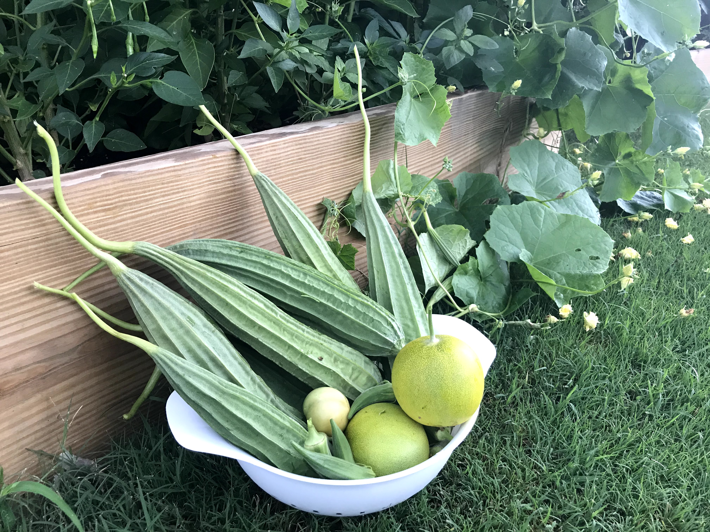

Abillion Health
Abillion Health - Doctor in the House
We are builiding a better health for people all over the world by adopting 4 core pilars of health.
Relax,Eat,Move,Sleep

Better health for everyone, everywhere
- We are building a better, healthier future for people all over the world.
- Working with 194 Member States, across six regions, and from more than 150 offices,
WHO staff are united in a shared commitment to achieve better health for everyone, everywhere.
- Together we strive to combat diseases – communicable diseases like influenza and HIV,
and noncommunicable diseases like cancer and heart disease.
- We help mothers and children survive and thrive so they can look forward to a healthy old age. We ensure the safety of the air people breathe,
the food they eat, the water they drink – and the medicines and vaccines they need.
World Helath Organization